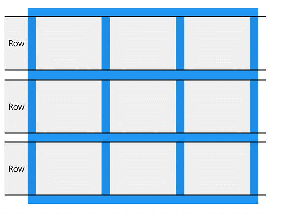

Uso de Grid
DISEÑO DE CUADRICULA CSS:
El módulo de diseño de cuadrícula de CSS ofrece un sistema de diseño basado en cuadrículas,
con filas y columnas, lo que facilita el diseño de páginas web sin tener que usar flotadores y
posiciones.
Compatibilidad con navegador: Las propiedades de la cuadrícula son compatibles con todos los
navegadores modernos.
Un diseño de cuadrícula consta de un elemento principal, con uno o más elementos secundarios:

Mostrar propiedad: Un elemento HTML se convierte en un contenedor de cuadrícula cuando su display propiedad
se establece en grid.
Todos los elementos secundarios directos del contenedor de cuadrícula se convierten automáticamente en elementos de cuadrícula.
Las líneas verticales de los elementos de la cuadrícula se denominan columnas:

Filas de cuadrícula: Las líneas horizontales de los elementos de la cuadrícula se denominan filas:

Grid Gaps (Brechas de cuadrícula):
Los espacios entre cada columna/fila se denominan espacios.
Puede ajustar el tamaño del espacio usando una de las siguientes propiedades:
- column-gap
- row-gap
- Gap

Líneas de cuadrícula: Las líneas entre columnas se llaman líneas de columna.
Las líneas entre filas se llaman líneas de fila.
Consulte los números de línea cuando coloque un elemento de cuadrícula en un contenedor de cuadrícula.
Coloque un elemento de cuadrícula en la línea de columna 1 y deje que termine en la línea de columna 3: